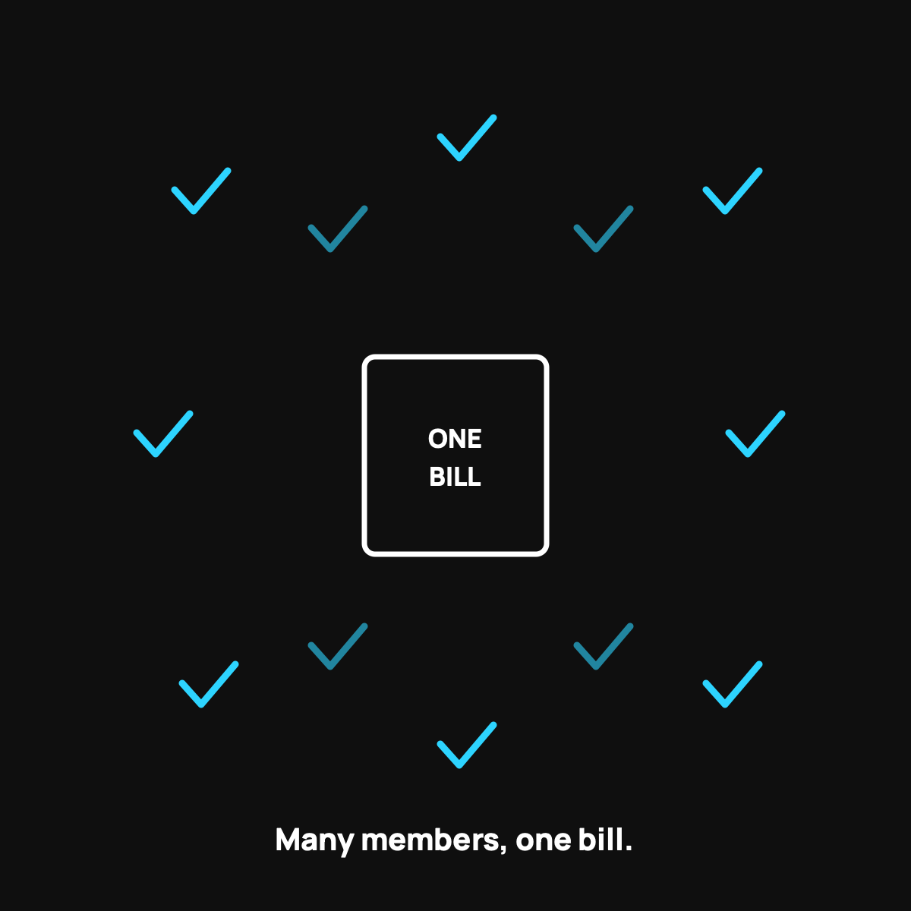

How Members Actually Fund Each Other's Bills
Not a chaotic tip jar. An orderly system, shown from the inside.
Funding a bill in health sharing is an orderly process, not a chaotic tip jar. First the care advocate negotiates the bill down (commonly 25 to 85 percent off). Then it's confirmed eligible under the guidelines. You pay your $500. The community shares the rest, usually within about a week. Your monthly money goes straight to real members' bills.

The word "crowdfunding" makes some people picture a chaotic online tip jar where you hope enough strangers chip in. That's not how health sharing works. There's an actual, orderly system behind it, and once you see the machinery, the whole thing feels a lot less mysterious and a lot more trustworthy. Here's how members really fund each other's bills with CrowdHealth, the service I use.
It starts with shrinking the bill
Before a single dollar gets shared, the bill gets attacked. When you have a health event, your care advocate negotiates the cost down, asking for the cash price and pushing lower. Members commonly see 25 to 85 percent knocked off the sticker. This step matters for everyone, because a smaller bill means the crowd funds less, which keeps everybody's monthly contribution low. I wrote about how one event moves through the system.
So step one isn't asking the crowd for money. It's making sure the crowd is asked for as little as possible.
Then the bill gets submitted and funded
Once the bill is negotiated and confirmed as eligible under the guidelines, it goes into the system to be funded by the community. You've already covered your $500 member commitment for the event. The remaining eligible amount is what the crowd shares.
Complete, eligible submissions get funded in about a week on average. That's faster than a lot of people expect, and faster than plenty of insurance reimbursements I've dealt with.
Where your monthly contribution goes
Here's the part that makes it a community and not a company. Each month, the money you contribute isn't disappearing into a corporate pool to boost some quarterly profit. It's going directly to fund the actual bills of actual members that month. You can see the requests. You're not paying premiums to a company hoping to pay out less. You're chipping in to catch a neighbor, knowing the same net catches you.
That's the core difference from insurance, and it's why the incentives feel so different. Nobody in this system gets richer by denying your bill. I unpacked that incentive flip.
The honest limits, as always
It's a system run by people under a set of guidelines, not a legal guarantee, because it is not insurance. Bills outside the guidelines don't get funded, which is why reading them up front matters. But within the rules, the process is clear, orderly, and has funded more than 45,000 bills. Strong track record, stated limits, both true.
The takeaway
Funding a bill isn't a chaotic tip jar. It's a real process: negotiate the bill way down, confirm it's eligible, you pay your $500, and the community shares the rest, usually within about a week. Your monthly money goes straight to helping real members, not padding a company's profit. Once you see the machinery, "trusting the crowd" stops feeling like a leap and starts feeling like a system.
Questions I get about this
Do CrowdHealth members vote on every bill?
Each month you see the community's funding requests and approve your share, with a couple of days to respond. Bills are already negotiated and checked against the guidelines before they reach you, so it's an orderly system, not strangers deciding your fate on a whim.
How long does it take for the crowd to fund a bill?
Complete, eligible submissions get funded in about a week on average. That's faster than plenty of insurance reimbursements I've dealt with. Incomplete paperwork is the usual cause of delay.
Where does my monthly contribution actually go?
Directly to fund the actual bills of actual members that month, not into a corporate pool to boost quarterly profit. Nobody in this system gets richer by denying your bill. That's the incentive flip I unpack in Health Insurance's Built-In Conflict of Interest.
Want to see the process from the inside? Use my code NORMAL: check CrowdHealth (opens in a new tab). New members get their first 3 months at $99 a month with code NORMAL.
My family of four uses CrowdHealth and I really believe in the model. If you join through my discount link (opens in a new tab) (code NORMAL), you get your first 3 months at $99 a month, and Normaltown USA earns a referral bonus if you stick around. It costs you nothing extra, and I only refer you to things I would tell a friend about. Health sharing is not insurance, and nothing here is medical, tax, or financial advice.

Written by David Dewese
Normal guy with a full-time job, wife, and kids. Spent twenty years pursuing music and creative ventures before starting a family. Sharing tips and tricks on how to thrive while living on an artist's income. Not a financial advisor. More about me.
New here?
Normaltown USA is plain-English money and healthcare help for normal people, written by a regular guy with a family of four. No jargon, no hype. Start here, or read the FAQ.